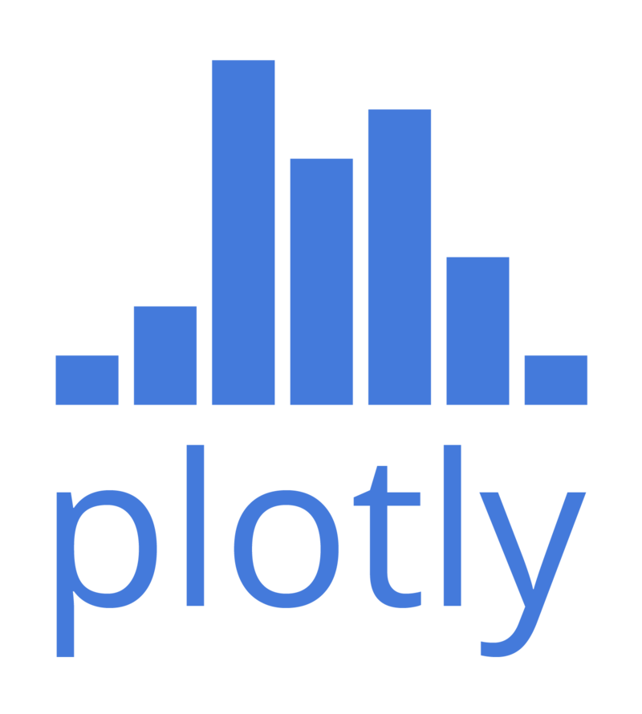
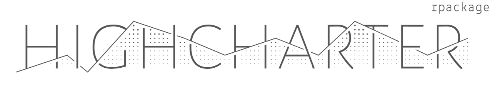

R Workshop: Module 4 (2)
Bobae Kang
April 4, 2018

This page contains the notes for the second part of R Workshop Module 4: Data visualization with R, which is part of the R Workshop series prepared by ICJIA Research Analyst Bobae Kang to enable and encourage ICJIA researchers to take advantage of R, a statistical programming language that is one of the most powerful modern research tools.
Links
Click here to go to the workshop home page.
Click here to go to the workshop Modules page.
Click here to view the accompanying slides for Module 4, Part 2.
Navigate to the other workshop materials:
Data visualization with R (2): Maps and interactive plots
Maps
## Warning: Deprecated, use tibble::rownames_to_column() instead.## Warning: Ignoring unknown aesthetics: x, yPrerequisites
- Shapefile
- a popular format for storing geospatial data
rgdalpacakge- an R interface to Geospatial Data Abstraction Library (GDAL) for reading and writing geospatial data formats
- Spatial objects in R
Shapefile
“A shapefile is a simple, nontopological format for storing the geometric location and attribute information of geographic features. Geographic features in a shapefile can be represented by points, lines, or polygons (areas).”
- “What is a shapefile?”, Esri
“The shapefile format is a popular geospatial vector data format for geographic information system (GIS) software […] developed and regulated by Esri […]. The shapefile format can spatially describe vector features: points, lines, and polygons […]. Each item usually has attributes that describe it, such as name or temperature.” - “Shapefile”, Wikipedia
Shapefile components
A shapefile format in fact consists of a collection of files. The following are commonly included when using shapefile data in R:
| File extension | Description |
|---|---|
.shp |
The main file that stores the feature geometry; required. |
.shx |
The index file that stores the index of the feature geometry; required. |
.dbf |
The dBASE table that stores the attribute information of features; required. |
.prj |
The file that stores the coordinate system information; used by ArcGIS. |
Importing a shapefile
library(rgdal)
spatial_object <- readORG(dsn, layer)
# example:
# il_counties <- read(dsn = "shapefiles", layer = "il_counties")- the
readORGfunction imports a shapefile into R environmentdsnis the path to the directory with a shapefile to importlayeris the name of a shapefile to import
- the output is a spatial vector object
Spatial (vector) objects in R
- There are multiple spatial vector object types:
- Without attributes:
Spatial*classesPoints,MultiPoints,Pixels,Grid, `Lines,Polygons
- With attributes:
Spatial*DataFrameclasses- The attributes
data.frametable can be accessed using standard methods.
- The attributes
- See the “Spatial Cheatsheet” for more one spatial objects in R
Example
class(counties)## [1] "SpatialPolygonsDataFrame"
## attr(,"package")
## [1] "sp"icjiarpackage provides a spatial object namedcountiesfor countes in Illinois- it is of the
SpatialPolygonsDataFrameclass
- it is of the
Packages for maps
tmappackage for thematic mapsleaftletpackage for interactive maps- And more
tmap: Thematic maps in R

Source: tmap GitHub repo
What is tmap?
“With the tmap package, thematic maps can be generated with great flexibility. The syntax for creating plots is similar to that of ggplot2. The add-on package tmaptools contains tool functions for reading and processing shape files.” - “tmap in a nutshell”
- In my experience,
tmapis the most accessible R package for generating maps, making it easy to get visually appealing maps using data in the shapefile format.
The qtm() function
qtm(shape_object, ...)- Generates a “quicke thematic map”
- comparable to
qplot()inggplot2
- comparable to
- Offers the same level of flexibility as the main plotting interface
- The main interface is stil recommended for complex plots
qtm(counties, fill = "circuit")
The tm_*() interface
tm_shape(shape_object) +
tm_*() # add tmap elements as layerstm_shapetakes a spatial “shape object”- Add layers using tmap elements
- two types of “drawing” layers: base and derived
- “attribute” layers
Base tmap drawing layers
————– —————- —————–
tm_polygons Draws polygons coltm_symbols Draws symbols size, col, shape tm_lines Draws lines col, lwdtm_raster Draws a raster coltm_text Add text labels text, size, col
The table is duplicated from a tmap vignette page
Derived tmap drawing layers
————– ———————— ——————————-
tm_fill Fills the polygons see tm_polygonstm_borders Draws polygon borders nonetm_bubbles Draws bubbles see tm_symbolstm_squares Draws squares see tm_symbolstm_dots Draws dots see tm_symbolstm_markders Draws markers see tm_symbols and tm_text tm_iso Draws iso/contour lines see tm_lines and tm_text
The table is duplicated from a tmap vignette page
tmap attribute layers
—————- ————————–
tm_grid Add coordinate grid lines tm_credits Add credits text labeltm_compass Add map compasstm_scale_bar Add scale bar
The table is duplicated from a tmap vignette page
tm_shape(counties) +
tm_borders() +
tm_fill(col = "circuit")Layouts for maps
tm_layout(title = NA, scale = 1, title.size = 1.3, bg.color = "white", aes.color = c(fill = "grey85", borders = "grey40", symbols = "grey60", dots = "black", lines = "red", text = "black", na = "grey75"), ...)tm_layoutis the general function to control all things about layout settings.tm_style_*functions which offer predefined sets of styling-related layout settings such as background colors, colors and font (similar toggplot2themes).tm_format_*functions which offer predefined sets of position-related layout settings such as margins.
Predefined styles
| Style | Description |
|---|---|
tm_style_white |
White background, commonly used colors (default) |
tm_style_gray |
Gray background, useful to highlight sequential palettes (e.g. in choropleths) |
tm_style_natural |
Emulation of natural view: blue waters and green land |
tm_style_bw |
Greyscale |
tm_style_classic |
Classic styled maps |
tm_style_col_blind |
Style for colorblind viewers |
tm_style_cobalt |
Inspired by latex beamer style cobalt |
tm_style_albatross |
Inspired by latex beamer style albatross |
tm_style_beaver |
Inspired by latex beamer style beaver |
tm_shape(counties) +
tm_borders() +
tm_fill(col = "circuit") +
tm_style_classic()Predefined formats
| Format | Description |
|---|---|
tm_format_World |
Format specified for world maps |
tm_format_World_wide |
for world maps with more space for the legend |
tm_format_Europe |
for maps of Europe |
tm_format_Europe_wide |
for maps of Europe with more space for the legend |
tm_format_NLD |
for maps of the Netherlands |
tm_format_NLD_wide |
for maps of the Netherlands with more space for the legend |
tm_shape(counties) +
tm_borders() +
tm_fill(col = "circuit") +
tm_format_World_wide()Static vs interactive modes
tmap_mode("plot") # set to static "plot" mode
tmap_mode("view") # set to interactive "view" mode
ttmp() # toggle between modes- “plot” mode generates a static map image
- “view” mode generates an interactive
leafletmaptm_view()is a function to specify options for “view” modetm_leaflet()can directly generate an interactiveleafletmap
tmap_mode("view")
qtm(counties, fill = "circuit")Leaflet

Source: leafletjs.com
What is leaflet?
“Leaflet is one of the most popular open-source JavaScript libraries for interactive maps. It’s used by websites ranging from The New York Times and The Washington Post to GitHub and Flickr, as well as GIS specialists like OpenStreetMap, Mapbox, and CartoDB.”
-“Leaflet for R”, RStudio
- While
leafletis a powerful library for generating interactive maps, it takes much time and practice to get familiar with its API. - Using
tmap’s interactive view could be an alterantive to usingleaflet’s API directly.
pal <- colorFactor(topo.colors(5), counties$circuit)
leaflet(counties) %>%
addProviderTiles("CartoDB.Positron") %>%
addPolygons(fillColor = ~pal(circuit), color = "darkgrey", weight = 2) %>%
addLegend(pal = pal, values = ~circuit)Resources
ggmapgithub repository- Kahle and Wickham. 2013. “ggmap: Spatial Visualization with ggplot2” article
- Lovelace, et al. 2017. “Introduction to visualising spatial data in R” article
tmapgithub repositoryleaftletofficial documentation page
Interactive Plots

Source: Wikipedia Commons
{kind=link}
Packages for interactive plots
ggiraph: anhtmlwidgetpackage for interactiveggplot2graphicsplotly: R API for the plotly.js libraryhighcharter: R API for the highchart.js librarygoogleVis: R API for Google Charts- And more

Source: ggiraph documentation page
ggiraph
“ggiraph is an htmlwidget and a ggplot2 extension. It allows ggplot graphics to be animated.”
- Gohel, D. (package author/creator)
ggiraph offers interactive geoms to be used for a ggplot2 plot and renders the plot with interactive geoms as an interactive visualization.
Interactive geom layers
p <- plot + geom_*_interactive(...)
ggiraph(code = print(p), ...)plotis aggplotobjectggiraph()takes aggplot2::ggplotobject with an interactivegeomto generate an interactive plot- 12 interactive
geomlayers that can be integrated into aggplotobject:- bar, boxplot, histogram, line, map, path, point, polygon, rect, segment, text, tile
Interactive aesthetic mappings
aes(tooltip, onclick, data_id)- Each interactive
geomhas mapping for the following interactive elements: tooltipis a column containing information to be displayed as tooltiponclickis a column containing JavaScript instructions to run for a “click” eventdata_idis a column containing id to be associated with elements.- Must be specified to use a customized “hover” effect
data <- ispcrime %>% filter(county != "Cook") %>% left_join(regions)
p <- ggplot(data, aes(x = violentCrime, propertyCrime, color = region)) +
geom_point_interactive(aes(tooltip = county, data_id = county))
ggiraph(code = print(p), hover_css = "fill:orange;fill-opacity:.3;cursor:pointer;")plotly

Source: wikimedia.org
.png){kind=link}
What is plotly?
“Plotly’s R graphing library makes interactive, publication-quality graphs online. Examples of how to make line plots, scatter plots, area charts, bar charts, error bars, box plots, histograms, heatmaps, subplots, multiple-axes, and 3D (WebGL based) charts.”
- “Plotly R Library”, plotly
The ggplotly() function
ggplotly(p = ggplot2::last_plot(), ...)ggplotly()provides a quick and easy way to convert aggplotobject into an interactive plotly objectpis aggplot2::ggplotobject to be made interactive- if left empty, the most recently created
ggplotobject is retrieved and used
- if left empty, the most recently created
data <- ispcrime %>% filter(county != "Cook") %>% left_join(regions)
p <- ggplot(data, aes(violentCrime, propertyCrime, colour = region)) +
geom_point() + labs(title = "Using ggplotly()")
ggplotly(p)The plot_ly() interface
plot_ly(data, x, y, color, alpha, symbol, size, ...)
# equivalent to add_type()
add_trace(p, ..., type = "type", inheret = TRUE)plot_lytakes a data frame and defines the aesthetic mappings- “trace” is the “geom” equivalent in
plot_lyinterface, which adds a layer to the plot output- While
plot_lycan define traces, usingadd_trace()and its variants make it possible to use adplyr-style workflow with pipe operators - By default, each trace inherits the mappings from
p
- While
plotly add_ functions
| Function | Description | Equivalent to add_trace(...) |
|---|---|---|
add_trace() |
add traces with options | NA |
add_markers() |
adds a scattorplot | type="scatter", mode="markers" |
add_lines() |
adds a line plot | type="scatter", mode="lines" |
add_bars() |
adds a bar plot | type="bar", mode="markers" |
add_histogram() |
adds a histogram | `type=“histogram” |
add_boxplot() |
adds a box plot | `type=“box” |
add_pie() |
adds a pie chart | type="", mode="" |
add_text() |
adds texts | |
add_polygons() |
adds polygons | type="", mode="" |
plot_ly(data, x = ~violentCrime, y = ~propertyCrime, color = ~region) %>%
add_markers() %>%
layout(title = "Using plot_ly() interface")highcharter

Source: highcharter github repo (jbkunst/highcharter)
What is highcharter?
“Highcharter is a R wrapper for Highcharts javascript libray and its modules. Highcharts is very mature and flexible javascript charting library and it has a great and powerful API.”
-Kunst, J. (package author)
- We have already seen
Highchartsplots in ICJIA R&A Unit’s online articles (e.g. Figure 1 and Figure 2 in this article).
The hchart() function
hchart(data, type, hcaes(x, y, ...))- Quickly generates a hichchart plot
- Comparable to
qplot()inggplot2
- Comparable to
hcaes()works likeaes()inggplot2
hchart(data, type = "scatter", hcaes(x = violentCrime, y = propertyCrime, group = region)) %>%
hc_title(text = "Using hchart() interface")The highchart() interface
highchart() %>%
hc_add_series(...) %>% # add a "series"
hc_xAxis(...) %>% # define x-axis
hc_yAxis(...) %>% # define y-axis
hc_title(...) %>% # add the main title
hc_chart(...) %>% # modify general plot options
hc_color(...) %>% # control colors
hc_*(...) # and more...- Closely follows the original Javascript API
highchart() %>%
hc_add_series(data, type = "scatter", hcaes(x = violentCrime, y = propertyCrime, group = region)) %>%
hc_title(text = "Using highchart() interface")Resources
ggiraphofficial documentation pageplotlyofficial documentation page- Sievert.
plotlyfor R book highcharterofficial documentation page
More on interactive plotting
rAmChartsis an R interface to theamChartsJavaScript library that offers interactive options for many common plot types and more. SeerAmChartsonline documentation for more.chartjsis an R interface to theChart.jsJavaScript library and offers six chart types (bar, line, pie, doughnut, radar, and polar area) for interactive plots. Seechartjswebsite for mare.dygraphsis an R interface to the dygraphs JavaScript library for interactive time-series plots. Seedygraphonline documentation for more.
Other visualizations
visNetwork(wrapper forvis.js) andnetworkD3are two popular packages for interactive visualization of network/graph data in R. Start withigraphortidygraphpackage to learn how to work with network objects in Rwordcloud2(wrapper forworldcloud2.js) is a package for creating word clouds, a popular way to visualize text data.data.treeis an R package for managing hierarchical data and tree structures. The pacakge also offers data visualization options for trees.
References
- Gohel, D. (n.d.). ggiraph
- Kunst, J. (2017). HIGHCHARTER
- Sievert, C. (n.d.). plotly for R
- Tennekes, M. (n.d.). “tmap in a nutshell”
- Tennekes, M. (n.d.). “tmap modes: plot and interactive view”